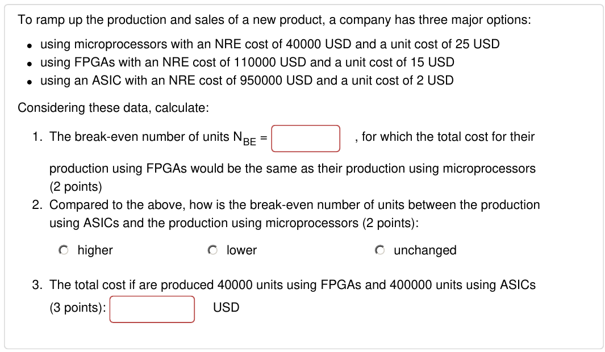
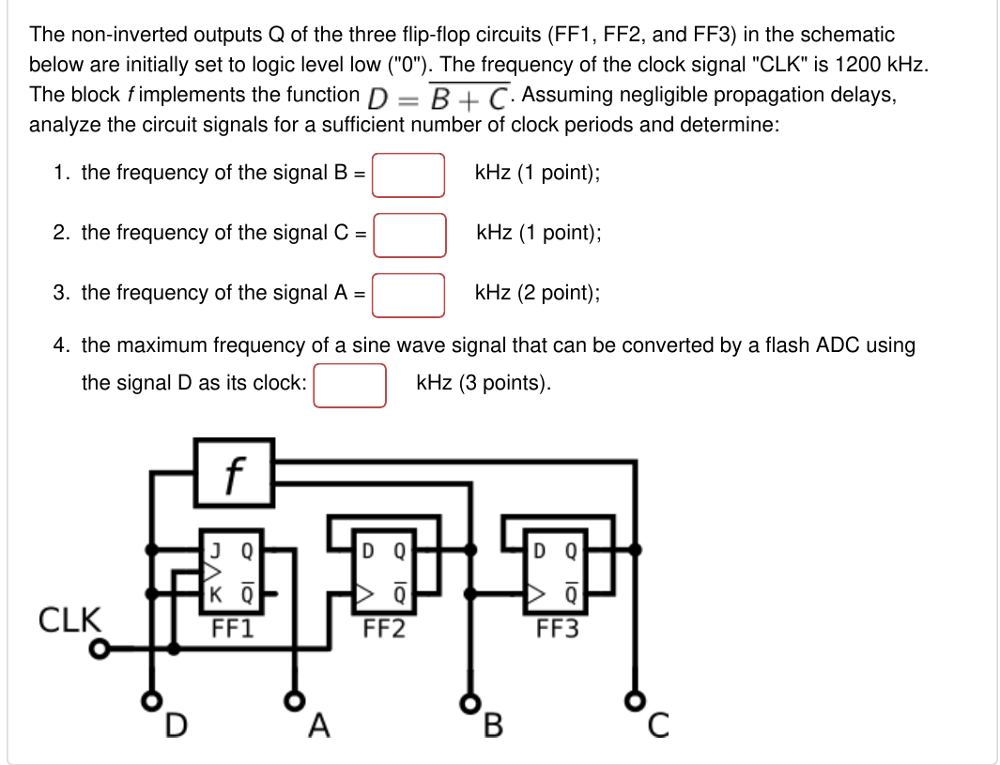
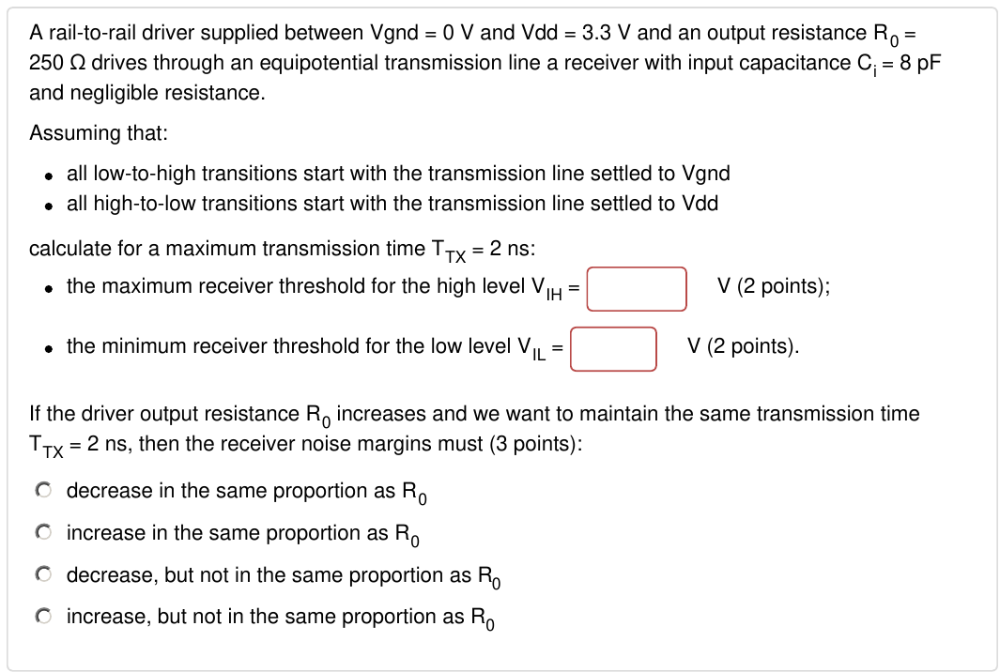

43. To'liq imtihon: 2021-yil 15-yanvar (3 ta katta masala)
Masala 1 (Question 2): NRE va break-even, 7 ball

Tarjima: kompaniya yangi mahsulot uchun uch variantdan birini tanlaydi: mikroprotsessor (NRE 40 000 USD, dona narxi 25 USD), FPGA (NRE 110 000, dona 15), ASIC (NRE 950 000, dona 2). 1) FPGA va mikroprotsessor bilan umumiy xarajat teng bo'ladigan dona soni NBE. 2) ASIC va mikroprotsessor orasidagi break-even bundan katta, kichik yoki tengmi? 3) 40 000 dona FPGA bilan va 400 000 dona ASIC bilan ishlab chiqarishning umumiy narxi.
Yechim
Umumiy narx = NRE + N · (dona narxi). Ikki variant teng bo'lgan N ni topamiz.
- Mikroprotsessor = FPGA: 40 000 + 25N = 110 000 + 15N → 10N = 70 000 → NBE = 7000.
- Mikroprotsessor = ASIC: 40 000 + 25N = 950 000 + 2N → 23N = 910 000 → N = 39 565. Bu 7000 dan katta → higher.
- FPGA: 110 000 + 40 000 · 15 = 710 000 USD. ASIC: 950 000 + 400 000 · 2 = 1 750 000 USD. Jami: 2 460 000 USD.
3-qismda tuzoq: NRE ni har variant uchun bir marta qo'shing, donalar soniga ko'paytirmang. (10-dars)
Masala 2 (Question 5): flip-flop lar va chastotalar, 7 ball

Tarjima: uchta FF ning Q chiqishlari boshida 0. CLK chastotasi 1200 kHz. f bloki D = B + C (NOR) funksiyasini bajaradi. Kechikishlar hisobga olinmaydi. Toping: 1) B ning chastotasi; 2) C ning chastotasi; 3) A ning chastotasi; 4) D signali takt bo'lib xizmat qiladigan flash ADC o'zgartira oladigan sinus signalning maksimal chastotasi.
Yechim
- FF2 va FF3 ikki bitli asinxron hisoblagich: FF2 ning D kirishi o'zining Q̄ iga ulangan, demak u har CLK frontida holatini almashtiradi. FF3 esa FF2 ning chiqishidan takt oladi. (C B): 00 → 01 → 10 → 11 → 00 → …
- B har CLK siklida o'zgaradi: to'liq davri 2 ta CLK davri → 1200/2 = 600 kHz.
- C har ikki B davrida bir marta o'zgaradi → 600/2 = 300 kHz.
- D = NOT(B + C) faqat B = 0 va C = 0 bo'lganda 1. Bu 4 ta holatdan faqat bittasi: D = 1, 0, 0, 0, 1, 0, 0, 0… Demak D ning davri 4 ta CLK davri → 1200/4 = 300 kHz.
- FF1 (JK) da J = K = D. D = 1 bo'lgan frontda FF1 holatini almashtiradi (toggle), D = 0 da saqlaydi. Demak A har 4 CLK da bir marta o'zgaradi: to'liq davri 8 ta CLK → 1200/8 = 150 kHz.
- Flash ADC D bilan taktlansa, namuna olish chastotasi fs = 300 kHz. Nyquist: sinus ≤ fs/2 = 150 kHz.
Masala 3 (Question 8): RC ulanish va qabul qilgich chegaralari, 7 ball

Tarjima: drayver 0 V va 3.3 V orasida ishlaydi, chiqish qarshiligi Ro = 250 Ω. U ekvipotensial (kechikishsiz) liniya orqali Ci = 8 pF sig'imli qabul qilgichni boshqaradi. Uzatish vaqti TTX = 2 ns bo'lishi uchun qabul qilgichning VIH chegarasi ko'pi bilan, VIL chegarasi kamida qancha bo'lishi kerak? Ro oshsa va TTX = 2 ns saqlanishi kerak bo'lsa, shovqin zaxiralari qanday o'zgarishi kerak?
Yechim
- Ekvipotensial liniya = kechikish yo'q, faqat RC zaryadlanish. τ = Ro · Ci = 250 · 8 pF = 2 ns.
- Ko'tarilish (0 → 3.3 V): V(t) = 3.3·(1 − e−t/τ). t = 2 ns = τ da: V = 3.3 · (1 − 0.368) = 2.09 V. Qabul qilgich 2 ns ichida "1" ni sezishi uchun VIH ≤ 2.09 V.
- Tushish (3.3 → 0 V): V(t) = 3.3 · e−t/τ. t = τ da: V = 3.3 · 0.368 = 1.21 V. Qabul qilgich 2 ns da "0" ni sezishi uchun VIL ≥ 1.21 V.
- Ro oshsa, τ oshadi va 2 ns da kuchlanish kamroq yo'l bosadi. Demak VIH pastroq, VIL yuqoriroq bo'lishi kerak. Zaxiralar NMH = VOH − VIH va NML = VIL − VOL ortadi. Lekin Ro eksponenta ichida (maxrajda) turadi, shuning uchun bu o'zgarish proporsional emas → increase, but not in the same proportion as Ro.
Tekshirish: t = τ bo'lgani uchun hisob oson: e−1 = 0.368, 1 − e−1 = 0.632. (24-dars, 3-dars)
O'zingizni tekshiring: yangi raqamlar bilan
Javob
30 000 + 20N = 90 000 + 12N → 8N = 60 000 → 7500 dona.Javob
B = 400 kHz, C = 200 kHz, D = 200 kHz, A = 100 kHz, maksimal sinus = 100 kHz (hammasi CLK ga proporsional).Javob
τ = 1 ns, t/τ = 2: 3.3·(1 − e−2) = 3.3 · 0.865 = 2.85 V. VIL min = 3.3 · 0.135 = 0.45 V.📝 Konspekt
- D-FF D = Q̄ bo'lsa har frontda toggle; JK da J = K = 1 → toggle, J = K = 0 → saqlaydi.
- Ro ↑ (T saqlansa) → shovqin zaxiralari ↑, lekin proporsional emas.